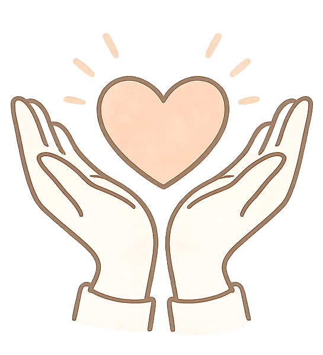

親職教養與家庭教育
- 不當完美父母：建立高品質的親子連結
- 當孩子的情緒教練：與高敏感或青春期孩子溝通
- 先接住情緒，再處理行為
校園・企業・公部門・機構
黃郁倩 諮商心理師｜諮心字第005821號
提供學校、企業 EAP、基金會、公部門與機構心理健康推廣講座。可依參與對象、年齡層、 活動目標、時間長度與形式，討論合適的心理講座主題與內容設計。

講座主題
以下主題可依學校、企業、機構或公部門需求調整，也可針對參與者狀態設計更貼近現場的內容。
邀約形式
可依活動目的、參與人數、時長與場地，討論實體、線上或工作坊形式。
聯絡方式
來信時可提供單位、對象、日期、主題方向與預計形式，方便更快評估與回覆。
來信標題可直接註明「心理師講座邀約」，以利辨識與回覆。
若你想先確認心理師背景、服務對象與專長，可回到首頁閱讀完整介紹。
了解心理師背景